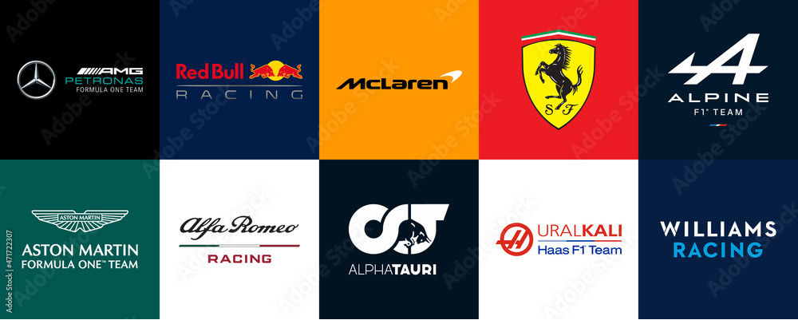
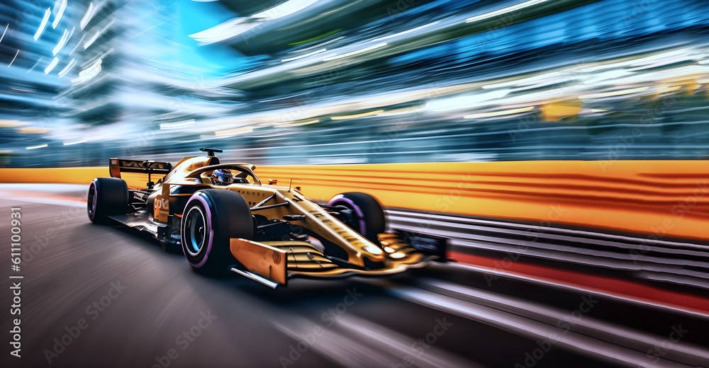
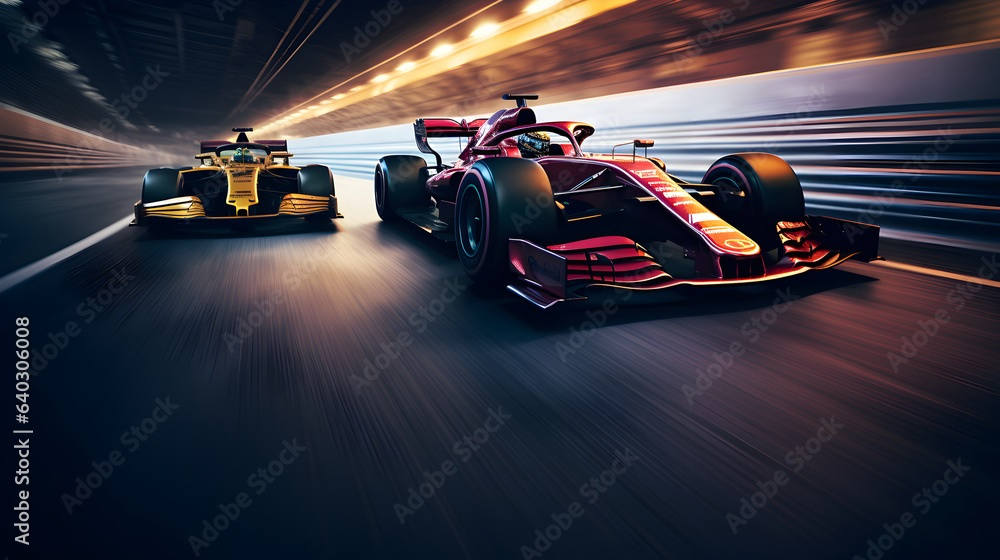

Bienvenido a nuestra página de aficionados de la fórmula 1 y fórmula 2 en Colombia, estamos muy agradecidos de que visites nuestra página para informarte sobre la aficion qué tenemos al mundo motor
Últimas Noticias
| Título | Fecha | Fuente |
|---|---|---|
| Por fin vuelve la F1 | 11/03/2025 | Oscar Andrade |
| Sebastian Montoya en F2 | 10/03/2025 | As Colombia |
| Mclaren, Mercedes, Ferrari o RedBull? | 09/03/2025 | GPFans |
Destacados

Hasta el momento tenemos 10 equipos en la parrilla ¿qué pasará con el próximo equipo 11 que se integrará desde el año 2026? ¿será un aporte? ¿será una caída?

En el año 2024 el equipo Mclaren demostró gran fortaleza en su auto y en el año 2025 se muestra como favorito ¿será esta la muestra de que ha llegado el fin de la era red bull?

Ahora Ferrari cuenta con el campeón más exitoso en la historia de la F1 hasta el momento ¿esto pesará contra Mclaren y los demás equipos punteros de la parrilla?